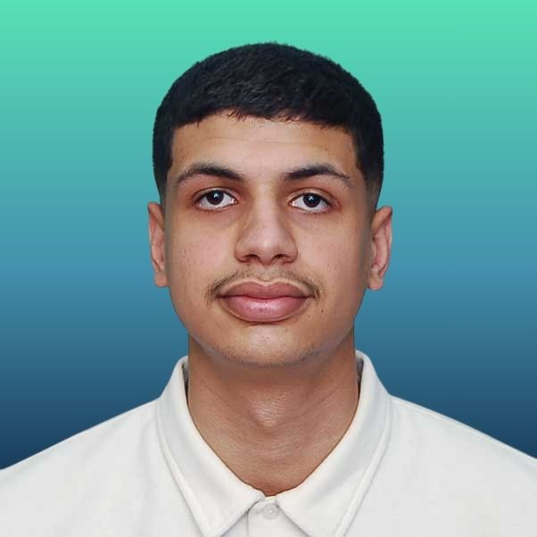

Mohamed Mansouri
Master's student in Intelligent Computer Systems at USTHB University.
Bachelor's degree in Computer Science from USTHB University.
Former intern at Djezzy (mobile eSIM app with facial recognition and NFC) and at the Ittihad Int incubator (Routimize).
Backend developer of the online English learning platform To The Moon With English.
I am passionate about Artificial Intelligence, Machine Learning, Deep Learning, Computer Vision, and Data Science, and I enjoy combining them with solid software engineering: Flutter mobile apps, Laravel backends, and REST APIs.
My research interests center on Remote Sensing, Image Classification, Time-Series Analysis, and Explainable AI.
Lately, my research work has focused on crop classification from multi-source satellite data with CNN and Transformer models.
I dedicate my free time to learning new technologies, computer programming, and building real-world applications.
Curriculum vitae
Scientific research
- Deep Learning for Crop Classification Using Multi-Source Satellite Data (M1 SII research project, USTHB). Pixel-wise crop classification on Sentinel-2 time series with CNN + Transformer models. I designed MCTNet-TAP, which adds Temporal Attention Pooling, and reached 91.6% Overall Accuracy, 0.887 Kappa, and 91.4% F1-score on the test set.
Projects
- To The Moon With English: online English learning platform with courses, quizzes, evaluations, enrollments, video learning, and feedback. Laravel, PHP, MySQL, REST API, Bunny Stream, React, TypeScript.
- eSIM Mobile Application: eSIM purchasing app with facial recognition and NFC identity verification, built at Djezzy. Flutter, Dart, Laravel.
- Routimize: route optimization system for distribution and delivery planning.
- Crop Classification with Deep Learning: CNN + Transformer models on Sentinel-2 data. PyTorch, Google Earth Engine.
Experience
- Backend Developer, To The Moon With English (2026)
- Practical Internship, Ittihad Int Incubator (Sep 2025 – Nov 2025)
- Final-Year Internship, Djezzy (Jan 2025 – Jun 2025)
Skills
- AI & Data: PyTorch, TensorFlow, OpenCV, NumPy, Pandas
- Development: Python, Flutter / Dart, Laravel / PHP, C#, Java, REST APIs, Firebase
- Databases: MySQL, Oracle, SQLite
- Tools: Git & GitHub, Jupyter Notebook, Anaconda, VS Code, Figma
Languages
- Arabic: native
- French: C1
- English: C1
If you have any questions, please contact me at this email address: your-email@example.com